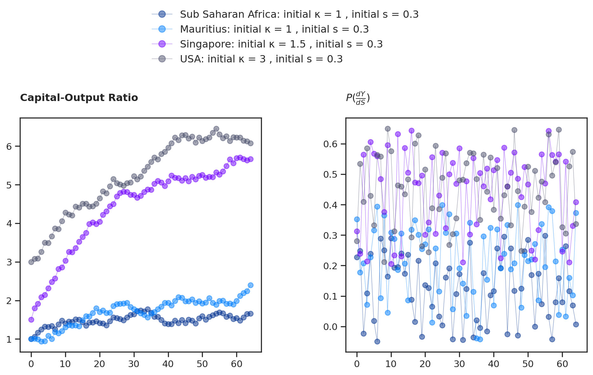

The aim of this paper is to make the people of The Republic of Mauritius understand economic growth, conditional convergence and the only objective reason as to why the Republic of Mauritius failed to converge to become an advanced economy after 56 years.
Author
Yuuki
Published
September 24, 2024
Please Note
This paper is math-heavy, so give MathJax a few seconds to load. This paper also has a lot of interactive charts using Plotly.js. Do not skip this paper. Economic growth is the most important part of economics. Understanding it will make you level up. Try to read it and if it is too hard, just watch the youtube videos every time I give you one and you will understand this just fine. If you still don’t go here and watch every video in order, after reading.
Economic Development
You should have already deduced this by now if you read the previous article, but our country has collapsed twice in its history and reached zero growth plenty of times because of an overvalued rupee, like right now for example. The first collapse was in the 1980’s. The second is now. This brings up the obvious question. How the hell did this country ever progress to even come here? The answer is with the beauty of free trade and a lot of luck. Mauritius would have been a lot more developed than it is today had it not been held back by its bad management. You see, back in the day, Europe had a thing for colonies for some reason, and it knew just the way to bolster its relations with newly freed countries. Some free money and some preferential trade agreements to be able to get into the good books of some African countries. Of those, Mauritius belonged to. The Yaounde Convention and The Lome agreement for ACP countries were some of the names of the agreements but that is not the most important part. The most important part is, Mauritius got a preferential trade agreement to sell sugar in the European Common Market which the UK was part of at the time. That allowed it to build a sizeable amount of savings. Unfortunately, we had no real understanding of the world. On the advice of international economists, Mauritius tried to industrialise by increasing tariffs as ‘a way to force’ the local conglomerates to go into manufacturing to do what is called import substitution industrialisation.
Of course, it was a lost cause, given the domestic demand of the country was a drop of water into the ocean which is world GDP. There was no way to be competitive in anything or export anything because there were obviously no economies of scale. It was just a dumb decision that showcased how bad a hand we had been dealt with in both the public and private sectors. Because we did not know anything, we had no patents. We still don’t to this day, to be honest. We just import machinery in this country. We do not invent them. We are not dumb, but we also kind of are because we do not devote enough to science. It is the only reason we do not have any modern banking infrastructures or a very well developed services sector technologically. Modern open banking infrastructure, which would empower anybody to develop applications for example has to be itself built first. Modern government infrastructure has to be built. You can’t import things like that. Until the US finds a reliable way to simplify it greatly atleast. You have to build your own stuff. The thing is, we can build it today. But the people who can, are not the leaders of the country. Leaders of companies. That is why we need to change things. The people who can do these things are here and dying to help their country. Their country does not want their help though. Their country wants to import foreign workers. There are plenty of very competent software engineers in the country. Anyway, we lost a lot of savings in this import substitution fad when it did not work out.
So then how did the Economic Miracle happen? The devil is in the details really. The economic miracle did happen and was a miracle of free trade but most importantly, it was an economic miracle because of what the fate of African countries generally were. It was a miracle because we escaped our pre-determined fate of being branded as a banana republic by the international community. Although, the joke is obviously on us given we are a banana republic today. It was a sarcastic jab in some sense. What happened was in the real world by no means extraordinary but when you placed it in context, what happened took place in Africa. That was the miracle, not what anybody did but rather the fact that an African country had finally been able to leave the trenches of Africa. So to who do we owe this success? To everybody, who worked hard at the time, and that of course includes political leaders but also any ‘labourer’. But the biggest contributor remains external, free trade. You see, sometimes things align by people just following their self-interests and the magic of free trade happens. When import substitution failed, the government backpedaled and decided to turn that project into what became export processing zones or ‘’zone franche’’ if you lived in that time. That would have failed too but problems started emerging in international trade in the 1970s, which saved us. Problems that needed solutions. Some countries were exporting excessively in the advanced economies and so the Multi Fiber Arrangement was made to impose quotas and limit exports from developing countries to developed ones. That was a boon for Mauritius, who as a country whose quotas remained unused benefitted tremendously from it. Because it forced a lot of Taiwanese and Hong Kong manufacturers to come here to be able to go above their quotas and continue fulfilling their orders to those developed countries. The local conglomerates copied and learned from them and eventually bought some of their factories, as time passed. So, we indeed got a miracle. An African miracle because we truly did something that was impossible. We progressed against all odds.
Show the code
%%captureimport numpy as npimport wbgapi as wbimport pandas as pdimport opinionatedimport matplotlib.pyplot as pltfrom cycler import cyclerfrom opinionated.core import download_googlefontfrom matplotlib.ticker import FuncFormatterplt.style.use("opinionated_rc") download_googlefont('Atkinson Hyperlegible', add_to_cache=True);plt.rc('font', family='Atkinson Hyperlegible')def reformat(a,b):if a >1000or-1000: val =round(a/1000,1) new_tick ='${:.0f}K'.format(val)return new_tickdollar = FuncFormatter(reformat)plt.rc('axes', prop_cycle=(cycler('color', list(['#00308F','#007FFF','#6F00FF','#4C516D'])) * cycler('linestyle', ['-', '--', ':', '-.'])))
Show the code
df = wb.data.DataFrame('NY.GDP.PCAP.KD',['MUS',"SSF","SGP","USA","WLD","CHN","IND","KOR","HKG"],time=range(1960, 2024, 1), labels=True,numericTimeKeys=True)df.set_index('Country', inplace=True)df = df.T#df.plot(figsize=(8.75,4),fontsize=13)#plt.yscale('log')#plt.ylim(0,100000)#plt.ylabel('Output per worker (Constant 2015 $)',fontsize=13)#plt.xlabel('Date',fontsize=20)#plt.legend(bbox_to_anchor=(1.35,0.5),fontsize=13)#plt.gca().yaxis.set_major_formatter(dollar)#plt.title('The convergence of different countries', x=1.32, fontsize=20,ha='right',fontweight='bold')pd.concat([df.head(10), df.tail(10)]).map("${:,.0f}".format)#plt.savefig('../posts/images/convergence.svg',bbox_inches='tight')
Country
Hong Kong SAR, China
Korea, Rep.
India
China
World
United States
Singapore
Sub-Saharan Africa
Mauritius
1960
$nan
$1,028
$306
$238
$3,650
$18,992
$3,612
$1,139
$1,414
1961
$3,956
$1,067
$310
$175
$3,744
$19,109
$3,777
$1,124
$1,726
1962
$4,334
$1,077
$312
$164
$3,875
$19,965
$3,952
$1,163
$1,692
1963
$4,847
$1,142
$323
$176
$3,985
$20,546
$4,240
$1,206
$1,877
1964
$5,140
$1,218
$339
$204
$4,160
$21,438
$4,004
$1,235
$1,706
1965
$5,740
$1,274
$323
$233
$4,303
$22,526
$4,215
$1,260
$1,722
1966
$5,791
$1,392
$316
$250
$4,443
$23,715
$4,530
$1,253
$1,626
1967
$5,737
$1,483
$333
$230
$4,516
$24,045
$4,985
$1,212
$1,665
1968
$5,807
$1,640
$337
$215
$4,687
$24,948
$5,562
$1,218
$1,522
1969
$6,364
$1,836
$351
$244
$4,865
$25,472
$6,237
$1,293
$1,570
2014
$41,797
$28,100
$1,490
$7,533
$9,987
$55,818
$54,682
$1,652
$9,182
2015
$42,432
$28,737
$1,590
$8,016
$10,178
$57,040
$55,646
$1,654
$9,508
2016
$43,088
$29,467
$1,701
$8,517
$10,344
$57,659
$56,899
$1,630
$9,868
2017
$44,381
$30,313
$1,796
$9,053
$10,580
$58,703
$59,415
$1,627
$10,248
2018
$45,280
$31,059
$1,891
$9,619
$10,808
$60,127
$61,216
$1,629
$10,652
2019
$44,195
$31,646
$1,944
$10,156
$10,977
$61,331
$61,334
$1,628
$10,957
2020
$41,451
$31,378
$1,815
$10,358
$10,548
$59,395
$59,144
$1,555
$9,363
2021
$44,531
$32,771
$1,975
$11,223
$11,112
$62,741
$67,639
$1,580
$9,679
2022
$43,283
$33,690
$2,098
$11,560
$11,365
$63,721
$67,949
$1,598
$10,570
2023
$43,548
$34,121
$2,239
$12,174
$11,567
$65,020
$65,422
$1,604
$11,319
\[\quad\]
When you look at the table or the log scaled graph you can clearly see, that we were really struggling to have consistent growth from the 60’s-80’s because sugarcane like any crop is dependent on weather conditions. A good year would push GDP up only for it to contract and go down again the next because of bad weather conditions. Textiles, on the other hand, were consistent. The world’s population was rising, they needed to be clothed and so we got a free ticket from fulfilling that need that allowed us to get out of the trenches of poverty that plagued Sub-Saharian Africa back then and still does to this day. But this is where all our problems ironically start as well. You see, we have not done anything since the 1990s besides import all the capital we can afford. We have imported a lot of capital, and transitioned to a services economy which was a bad thing to do given that is what made us converge to zero growth. We decreased our long-term productive capacity over time for short-term profits which pushed us to zero growth in 2019. It is good to say this bluntly. Our country, de-industrialised without having ever really been fully industrialised first. Why? Because we do not know how to go to the next level. You can only do what you know. All we excelled at was importing capital. Be a jack of all trades. Excel at nothing on world markets. We are collectors of nontradable companies and real estate. It is not enough. We are going into a wall.
A world wide increase in living standards
Now why is it then, that no political party or even the private sector, has been able to reproduce another economic miracle in the Republic of Mauritius after the one that happened in the 1980’s? Why is it that no one knew what the ingredients to that initial success were so that they could once again cook another miracle? What did we have then that we do not have now? I already told you the answer. The answer is free trade. An ingredient that is out of our control because we did not do anything to make it happen. Globalisation happened, and the domination of free trade changed the world without anybody needing to be more competent. America, Europe and Asia brought their competence forward and carried the world, by gifting them their labor-intensive manufacturing operations by giving them their equipment, as capital that they could import as they now moved to the capital-intensive electronics age we live in. It is hard to fathom the value chains that free trade coupled with network systems (the internet), and computers have made possible. It is crazy, how much living standards have improved because of it. Just like they did in the industrial revolution by increasing living standards by its biggest amount ever to give people worldwide basic plumbing through trade as long as they could afford it.
All of these, are things that you do not need to go invent today. All that is required of you is your cooperation for you to use these ready-made things or technologies for most of the things you do. You call that importable free technology. Even the materials for basic toilet plumbing are free importable technology. Technology that is freely importable is no longer considered technology however for the rest of the world that imports it. It is just capital. We rarely know anything about it. We will employ people who know how to use the capital but rarely will we know how to build it from scratch. The Republic of Mauritius imports capital. We lack the human capital needed to go to the next level, and nobody wants to say it because this is something which could only hurt their bottom line. It is not me being offensive. It is the truth. It cannot have the human capital. We are a country that is not on any frontier of technology and science. We are a freeloader of the world by excellence. We do not do any serious research on anything. We have zero patents after 56 years. That is why there is no free market, no vision, nothing here. It is an empty island, we all live in with a lot of talk of being a paradise. Empty nevertheless is all the talk. The past 56 years prove it enough. All we do is one thing. We just import capital and use the technology that is handed to us on a platter. Can barely fucking invent anything. In all sectors of the economy. We are collectors of companies but not good at anything in particular except perhaps giving our government a good wank to keep the flow of public money steady. There is so little competition in this country that some conglomerates own banks for some reason. There has never been a single landmark antitrust case or legislation. That is why the majority of our increases in real output come from that solely. The accumulation of that free technology and the productivity that comes along from using that capital. Look, the truth is, if our country had just one firm that did wealth management, that was better than any firm in the world, trillions of dollars would come rushing into the country, leaving New York, Beijing, Tokyo, Paris, and London. That is the power of competence. I’m being real with you. The almighty dollar is enamored with competence. Of being able to do something better than others. Money circulates to where the competence can be found in abundance because that is where the money can also be more efficiently used to generate more money.
Do you understand that? The almighty dollar does not care about consent. Where competence is high, it will go in flocks. But wait? It does come in Mauritius too in the global business sector? Why? What do we have here in Mauritius exactly? Does money come in for the competence in the global business sector? A lot of companies come here, because of the possibility of setting up modern sweat-shops here for labour intensive, back office accounting, human resources administration services and software development services etc… Our country kind of sucks at giving out fair wages. Foreign companies love it, because they get to keep their bills smaller. Mostly though, in the case of global businesses, they come here because of the conveniences it provides them which hugely outweighs the costs, when it concerns setting companies to route investments to other places in the world. The ability to minimize taxes legally with DTAA’s. Technicalities are never permanent though. They are loopholes engineered by powerful people wishing to minimize their taxes. The dollar that comes in flocks to our country only comes in flocks to pass through it to go somewhere else, and to benefit from DTAA’s. The biggest flow that is to India’s capital market is now dwindling as of 2024. Plus with this new corporate tax, one wonders, what is the point exactly anymore? What is our edge? This very thing which has been holding Mauritius together for the past ten years along with the sale of real estate to foreigners is bound to be the very thing that will be our undoing if capital flight happens when companies migrate elsewhere and start claiming their liabilities back.
Economic growth in the long run
So the people in control of this country are just as much headless chickens as the ones in the private sector. No one wants to admit but we are completely stuck with no future as a country right now. That is the biggest problem of the Republic of Mauritius. It would do you good to remember this, if competence does not exist, honest opinions cannot exist. Morality cannot exist. I cannot give a damn about you if giving a damn about you would mean, I lose my privileged place in society. That is just the blunt truth. I cannot give my honest opinion if giving my honest opinion of things would mean the government would close its tap of public money to me, which would open me to the most dreaded of possibilities, bankruptcy. The private sector does not really care about who comes into power. It only cares about its interest. So it cannot give a single fuck about you. This makes politics pointless in the Republic of Mauritius. Because powerful people in the private sector are simply not equipped to give a damn. They will all make generous contributions to all parties and do their best to stay in the good books of any government for their own self interests. Because there is zero competition, in the end, it’s all useless. It could only harm them to engage in any way. They already have everything. A golden spoon, in the way laws are made for them. I am not saying the private sector does not care. Maybe they do but they are not allowed to show they care unless they can go at it alone. Some are, although I will not name anybody.
Now I don’t really blame the conglomerates, to be honest. They are not politicians. None of them ever came on camera every week and pretended to give a damn about you all. That is not their responsibility. Your well-being and my well-being are not on them in the end. You should always expect them to be looking to earn the maximum amount they can, even the most competent person out there. As a government, if you want morality to exist, you need to have laws that enable a lot of competition. Who would refuse to be given a monopoly in a market so they can get free money and be fed from a literal golden spoon.1 I guess this just goes to show that the good old actions speak louder than words is a universal law of nature that is applicable everywhere. Take the minimum wage itself as an example, the biggest accomplishment of the current government. Since it came into force, just go look how much the rupee depreciated. That just shows you not much was gained in the end. You got a breadcrumb. But the less educated cannot add that up. Government exploits that pitiful fact. Facts are facts, even sad facts. Alright, this should be a good enough amount of destruction, of the made-up narratives that were cooked up by politicians as to what this country went through for 56 years. I told you the objective truth. Whether you believe it or not, is up to you and not up to me. Let’s get serious now, and focus on understanding economic growth. Modern Economic growth is all Robert Solow and to a lesser degree Trevor Swan who both invented the Exogenous Growth Model after world war 2. Switch gears, it is going to get mathematical now.
Just like price, in our last paper, output is not easy to estimate because there are so many different markets in a country, and yet, we can simplify things to make it easier to try to understand the behavior of output in the long run in any economy. The output you generally see that is reported in the news every quarter is estimated very laboriously just like price is. This is why like inflation, output can be easily manipulated by playing with numbers. Mostly just modifying the GDP deflator will do the trick but sometimes you can be cheeky and boost production numbers too. The Republic of Mauritius has done both since 2014. From 2014 to 2019, government boosted production numbers. Since 2020, government has been boosting production numbers, and underreporting the GDP deflator. The methodology used to estimate output every quarter is owed to Wassily Leontief for his invention of the input-output model. Leontief was Solow’s doctoral advisor. Basically, he suggested using linear algebra as a way to calculate the total output of a country. A friendly introduction to that if you want to learn it can be found here and is easy to digest.
The beauty of the exogenous growth model comes from being able to abstract all of this away by using assumptions that simplify the construction of the model. The model assumes that there is only one capital good that is produced, accumulated, and undergoes depreciation. There is perpetual full employment. That greatly simplifies things in that we can simply use an aggregate production to construct the model.
The Key Assumption
Real GDP \(Y(t)\) is determined by a production function using these two factors we just talked about. The one capital good and a predetermined amount of labor of which all are always employed i.e there is perpetual full employment. \(Y=F(K,L)\). One production function which can accomodate these assumptions is the Cobb-Douglas production function where.
\(K(t)\) is the total stock of capital in the economy at time \(t\). This combines the values of all structures, equipment, and intellectual property used by all the establishments. More capital, more real GDP.
\(L(t)\) is the total amount of labor in the economy at time \(t\). This could be a count of the number of workers, or we can get fancy and think of it as a combined stock of skills and abilities that those workers bring with them. Either way, more labor, more real GDP.
\(A(t)\) is the level of productivity at time \(t\). It measures how efficiently we use the capital and labor in the economy. Higher productivity, higher real GDP. This is what we simply do not have in Mauritius just FYI.
Let us also look at why the Cobb-Douglas is the most common and popular choice among production functions. It is because it can handily respect the following important conditions.
The first is CRS (Constant Returns to scale) which just means that a doubling of inputs will double output. Doubling capital and labor in mauritius will automatically double the output we produce. That is what it means.
The second is the first and second derivative of output Y with respects to K or the Marginal Product of Capital (MPK). The cobb-douglas production function entails decreasing marginal returns to capital accumulation. This turns out to be the key element of the model. What does this mean in layman terms? If a firm acquires an extra unit of capital, it should raise its output. But if the firm keeps piling on extra capital without raising the number of workers available to use this capital, the increases in output will probably taper off. In the Cobb-Douglas case, the parameter \(\alpha\) dictates the pace of this tapering off.
In other words, the addition to the capital stock each period depends positively on savings (this is a closed-economy model so savings equals investment) and negatively on depreciation, which is assumed to take place at rate \(\delta\). In simple words, more savings equal a higher upper bound for our final capital stock and a higher depreciation will set a lower upper bound (supremum) for our final capital stock by making the cost of maintenance of capital higher.
Most elementary analysis of the solow model will be focused on understanding the steady state. I will cover this so that you may test your understanding of what I have discussed with you so far. Suppose I solved the solow model for the following production function.
What do we do know ? How do we proceed ? We could start by acknowledging (7) as the net increase in capital stock for every period or \(\dot{K}\). Note that, I will leave out the time notation hereon because of tediousness involved in writing them all the time. So we get
\[\begin{equation}\tag{9}
\dot{K} = sY
\end{equation}\]
We could now define \(y = \frac{Y}{AL}\) as output per effective worker and \(k=\frac{K}{AL}\) as capital per effective worker giving us \(y=f(k,1)\). We would thus end up with the fundamental differential equation called the law of motion of capital by inserting (4), (5), (6), and (11) in (10) giving us
\[\begin{equation}\tag{12}
\dot{k} = sy - (g + n + \delta)k \\
= sf(k)^{0.5} - (g+n+\delta)k
\end{equation}\]
Graphically or geometrically, we say that the change in \(k\) is given by the difference of \(sy\) and \((g+n+\delta)k\). As long as \(sy > (g+n+\delta)k\) then \(k\) will increase. On the other hand as long as \(sy < (g+n+\delta)k\), \(k\) will decrease. When \(sy = (g+n+\delta)k\), that is where a steady state is reached and \(\dot{k}=0\) or the change in k is zero. In fact, by integrating (12) and saving on notation we get
Where \(b=1-\alpha\) and \(d=g+n+\delta\) and \(k_{0}\) is the initial capital stock we start with. It can be seen that as \(t\) gets larger and larger, \(k(t)\) grows according to \((\frac{s}{d})^{\frac{1}{b}}\). This can be verified by setting \(\dot{k}=0\) in (12). Which gives us the steady state \(k^{*}\).
Likewise in steady state output grows at rate \(n+g\) i.e at the rate that \(AL\) grows that is population growth and labor productivity while output per worker grows at rate \(g\). We call that the balanced growth path because this is basically a constant growth rate when \(k^{*}\) (the steady state is reached).
You can derive it fairly easily by defining some notation for the economical handling of a growth series by using logs. Using the definition below and using the two following properties of logarithms.
Setting \(G^{A}=g\) and \(G^{L}=n\) and \(\alpha=0.5\) we then get
\[ G^{Y} = g + 0.5 G^{K} + 0.05 n \]
This means all variations in the growth rate of output are due to variations in the growth rate for capital. If output is growing at a constant rate, then capital must also be growing at a constant rate. And we know that the capital-output ratio tends to move towards a specific equilibrium value. So along a steady growth path, the growth rate of output equals the growth rate of capital. Thus, the previous equation can be re-written as
\[ G^{Y} = g + 0.5 G^{Y} + 0.05 + n \]
Substracting \(0.5 G^{Y}\) from both sides we get the growth rate of output
\[ G^{Y} = \frac{g}{0.5} + n \]
Substracting \(n\) from both sides we get the rate of growth of output per worker
\[ G^{Y} - n = \frac{g}{0.5} \]
So output per effective worker depends negatively on population growth, and capital’s share of total income. It depends positively on \(g\) called labor productivity. Now, we will come back to the implications of this a bit further down. For now, lets refocus on the steady state. People like to say that a picture is worth a thousand words. Let’s graph what this all means, in practice. Now, I will explain the graphs to you but, if you understood what has been discussed so far, you should generally have an inkling of the explanations before I give them to you. Because the solow model is elegant and intuitive. So, if you can guess as the explanations. That’s a good sign that you have understood everything so far.
So \(k^{*}\) is the steady state which means what ? At that point total investment and total depreciation are equal so the net change in \(k\) is zero. On the flipside if we start at the right most side of the graph where \(k_0=2\) what will happen ? Total depreciation will be more than total investment which will force \(k\) down to \(k^{*}\). If we start at the left most side of the graph where we can set the intial value \(k_0=0.1\) what will happen ? Total depreciation will be less than total investment which will push \(k\) up to \(k^{*}\) the steady state. Easy enough ? Differential equations that have steady states are fairly simple to comprehend. Depending on the initial value of \(k_0\) that you will choose, the system will either move up to \(k^{*}\) or be forced down to \(k^{*}\). Let us visualise this with another graph to make sure you get it. The solow model, is all about the steady state. All economies in the world have different ‘steady states’ which they are converging to at all times.
Show the code
plt.rc('axes', prop_cycle=(cycler('color', list(['#00308F','#007FFF','#6F00FF','#4C516D'])) + cycler('linestyle', ['-', '--', ':', '-.'])))# Yes this is a different production function but the graph is what matters here, I did it correctly for the first graph and it is a pain to get right. These are irrelevant in so far as understanding what is going on, look at the image for revelant information.def g(A, s, alpha, delta, k):return A * s * k**alpha + (1- delta) * kA, s, alpha, delta =2, 0.3, 0.3, 0.4x0 = np.array([.25, 1.25, 3.25])ts_length =20xmin, xmax =0, ts_lengthymin, ymax =0, 3.5def simulate_ts(x0_values, ts_length): k_star = (s * A / delta)**(1/(1-alpha)) fig, ax = plt.subplots(figsize=[11, 5]) ax.set_xlim(xmin, xmax) ax.set_ylim(ymin, ymax) ts = np.zeros(ts_length)# simulate and plot time seriesfor x_init in x0_values: ts[0] = x_initfor t inrange(1, ts_length): ts[t] = g(A, s, alpha, delta, ts[t-1]) ax.plot(np.arange(ts_length), ts, '-o', ms=4, alpha=0.6, label=r'$k_0=%g$'%x_init) ax.plot(np.arange(ts_length), np.full(ts_length,k_star), alpha=0.6, color='red', label=r'$k^*$') ax.legend(fontsize=10,loc='upper right') ax.set_xlabel(r'$t$', fontsize=14) ax.set_ylabel(r'$k_t$', fontsize=14) plt.show()simulate_ts(x0, ts_length)
Now this particular setup is discrete and not continuous, but it is useful if you are not used to the derivative. Do you see how the curve is changing as it is getting closer to the steady state? All the \(k_0\) starts as a curve and finishes when it reaches the steady state as a flat line. Why ? You should be able to answer that. If you cannot find the answer, then do not move on just yet. Do what I suggest next and ensure you understand before moving on. Watch this and this and always remember that youtube is your friend ! For those that can understand this, let us look at the continuous version of this same process.
Show the code
A, s, alpha, delta =2, 0.3, 0.3, 0.4# Yes this is a different production function but the graph is what matters here, I did it correctly for the first graph and it is a pain to get right. These are irrelevant in so far as understanding what is going on, look at the image for revelant information.def g_con(A, s, alpha, delta, k):return A * s * k**alpha - delta * kdef plot_gcon(kstar=None): k_grid = np.linspace(0, 2.8, 10000) fig, ax = plt.subplots(figsize=[11, 5]) ax.plot(k_grid, g_con(A, s, alpha, delta, k_grid), label='$f(k)$') ax.plot(k_grid, 0* k_grid, label="$f'(k)=0$")if kstar: fps = (kstar,) ax.plot(fps, 0, 'go', ms=10, alpha=0.6) ax.annotate(r'$k^* = (\frac{s}{ n+g+\delta})^{\frac{1}{1-\alpha}}$', xy=(kstar, 0), xycoords='data', xytext=(0, 60), textcoords='offset points', fontsize=15, arrowprops=dict(arrowstyle="->")) ax.legend(loc='lower left', fontsize=15) ax.set_xlabel("$f(k)$",fontsize=15) ax.set_ylabel("$f'(k)$", fontsize=15) ax.set_xticks((0, 1, 2, 3)) ax.set_yticks((-0.3, 0, 0.3)) plt.show()kstar = ((s * A) / delta)**(1/(1- alpha))plot_gcon(kstar)
Unlike the previous graph this graph is continuous and shows some salient features of the cobb-douglas production function as we discussed at the start which is diminishing returns. In the solow model the slope of capital at any time is called the Marginal Product of Capital and is abbreviated MPK \(\frac{\partial{F(K,L)}}{\partial{K}}\). Similarly we have the Marginal Product of Labor and it is abbreviated MPL \(\frac{\partial{F(K,L)}}{\partial{L}}\).
\[ MPK = \frac{\text{Change in Output}}{\text{Change in Capital}}\]\[ MPL = \frac{\text{Change in Output}}{\text{Change in Labor}} \]
Meaning how much does output change from a given change in capital. In the cobb douglas production function, as you can see from the graph when the first unit of capital is added the MPK is infinite because of the vertical asymptote. When the last unit of capital is added the MPK is zero. Mathematically we write them as limit conditions.
We can re-arrange this by removing the factor \(K^{-1}\) out giving us the MPK in a cobb-douglas production function as \(0.5YK^{-1}\) or \(0.5\frac{Y}{K}\). The same process can be done for the MPL. Just remember that you only differentiate partially here and leave the rest fixed. We did not touch L. Do the MPL on your own as an exercise using the power rule. Then let us show, how capital accumulation which is what we did here in Mauritius for 56 years can only provide you with growth that fades with time as the MPK goes down. Let us do a simple tabular example. You should do the middle ones on your own. But as you can see in the end this is where we are in our country. Capital does not really do much of anything anymore. We already have a lot of it.
The MPK in any economy given enough time will decrease.
Time
Total Output
Total K
MPK
0
0
0
0
1
100
500
\(\frac{dY}{dK}=0.05\frac{100}{500}=0.1\)
5
175
1000
\(0.5\frac{175}{1000}=0.0875\)
8
325
1500
\(0.5\frac{325}{1500}=0.108\)
15
500
2000
-
20
550
2500
-
35
635
4500
\(0.5\frac{635}{4500}=0.0705\)
38
645
5000
\(0.5\frac{645}{5000}=0.0645\)
40
650
5500
\(0.5\frac{650}{5500}=0.06\)
So far we have left price out but we may now bring price in now by going from real to nominal prices and understanding how the MPK (Real Return on Capital) and the MPL (Real Wages) relates to them in the following fashion.
\[ Y\cdot P = WL + RK \]
Where P is prices, W is nominal wages, and R is the Real Return on Capital. Dividing them by \(P\) we get
We can now show that the real wage grows at the rate of technological progress or increases in labor productivity/efficiency \(g\). Define and set w equal to total labor income divided by labor income and transform the equation into a growth series and then re-arrange accordingly into the fact that labor income grows at rate \(g\) in steady state.
\[ TLI = \text{Total Labor Income} \]\[ L =\text{Labor Income}\]
\[\begin{equation}
w = \frac{TLI}{L}
\end{equation}\]
\[ G^{w} = \frac{G^{TLI}}{G^{L}} \]
\[g = \frac{G^{TLI}}{n}\]
Quite literally if we hold n to be a constant and set \(n=1\), then all growth in total labor income comes solely from \(g\). Equivalently, if we hold the growth rate of \(n\) to be big enough, g becomes smaller and smaller so it may be equally shared among the labor force \(L\) earning \(TLI\). No need to panic though if \(G^{TLI}>G^{L}\), then \(g\) will be be allowed to grow just fine as it is the case in most advanced economies. What do you think has been happening in Mauritius if we take inflation to be around 90% for the period 2020 to 2024. Real wages has been decreasing, and total capital income would have been increasing a lot. So \(G^{w}<G^{TLI}\). If real wages are increasing over time it must be true that \(G^{w}>G^{TLI}\). That is how labor can increase their real share of national income over time.
In the United States at one point that made \(TLI^{US}=\frac{2}{3}Y\). It has since gone down, because real wages have not kept up with total labor income increases in the last 30 years, which has brought TLI to \(TLI^{US}=[0.60,0.66]Y\). Locally in Mauritius, the same has been true for the last 56 years. \(TKI^{MU}=[0.52,0.55]Y\), Total Capital Income has been steady at around 52-55%. Equality? There has been never been much of that, gini indexes are fairly useless. Median real income is what matters and it has been steady. How do I know? Because the share of income has stayed the same. Worse it has decreased in the past four years. Inequality has been more or less the same for most of the last 56 years and in the last four years it has increased dramatically although to say how much is impossible without reliable data. So, that is where, all the record profits being recorded by almost all big companies, come from (They are not real, they are nominal illusions).
Additionally, we can already see what effect the import of foreign labor who will do non skilled work will have on your real wages ? It will decrease them, force them down, literally by forcing you to share the total labor income with them that is already much smaller. At best \(TLI=0.4Y\) is currently in Mauritius. I have nothing against these people, but that total labor income is already much smaller because of the 90% inflation. Importing foreign labour into our country now would signal the permanent social death of a large of our working population. We can do the same thing for capital by defining the real rate of return on capital to be equal the MPK. Note that there is no need for growth rates here because we are interested in \(r_{t}\) alone. We already covered how the MPK works. Go back and review it if you need to.
The real return on capital in Mauritius is low. We have already accumulated a lot of capital in the last 30 years. Infact, we might argue that the MPK should have a short term iteration to it, to be able to explain why capital does not come into our country lately. I can attest to it, you can attest to it, the whole country can attest to it. There is a huge FCY shortage. Capital from this country own’s conglomerates stopped flowing into it. They are flowing into US treasuries which is the wise choice if they know of this country’s true position. Of course they do. So, when you factor in real interest rates which should be a solid alternative to the MPK to explain this behavior, it becomes obvious that the elites know how high inflation truly is because of their decisions. It seems obvious to say this but investing in Mauritius is not a very rationally sound thing to do lately. Because the country has been deleveraging hard and this has made real interest rates wildly negative, which is why this country’s elite has most likely already and completely jumped ship into dollars. It is only you and me, the paupers of this land. The slaves, that must be forced to keep our useless currency. So, the real interest rate is calculated as expected inflation minus actual inflation. In the last four years, it has been hugely negative to deleverage our country with inflation.
\[ \pi^{R}_{t} = \pi^{E}_{t} - \pi^{A}_{t} \]
Now, you might ask, what is expected inflation? What is a good definition of it? It is what people expect inflation to be this year, and so will make their best effort by their actions, to hedge against it. The expected inflation is what they will try to offset when negotiating cost of living adjustments every year. In mauritius we call that “Compensation Salariale”. You can see that it has increased in Mauritius from 2020 to 2024 meaning it indicates a consistent increase in expected inflation \(\pi^{E}_{t}\) from 2020 to 2024.
THIS TABLE ALONE SHOULD BE ENOUGH TO CONVINCE YOU THAT INFLATION IS ONLY GOING UP UP UP.
Year
Cost of Living Adjustment
2020
300 Rupees
2021
375 Rupees
2022
500 Rupees
2023
1000 Rupees
2024
1500-2000 Rupees
This table should inform you that everybody is expecting inflation to be higher with each passing year and that \(\pi^{E}_{2024}\) is higher than last year. This is why the conglomerates have been short on the rupee by holding their dollars, which is a much smarter choice. It is just a good decision to get out of the rupee because it is a currency that has had 90% inflation in the past four years. So conglomerates have been making record profits only nominally given our country is collapsing. Think about it, has the Government of Mauritius ever restricted the buying and selling of foreign currency like this ever before? They used all kinds of excuses like covid, war, and no tourism. There is more than a dictatorship in the management of foreign currency in Mauritius. Still, you seriously think, they did not get out of the rupee? It is free money for them given they depreciate the currency when they want to because they have total control of the central bank. What is happening with the management of the national currency of this country is downright criminal these days.
Now let’s move on from the steady state, you see in practice countries rarely finish capital accumulation. Watch this if this seems odd to you. If they finish it they are in trouble, like our country is in because almost always in practice if you finish it you jump to the right side of the steady state where you are not forming enough capital to replace all the depreciated ones. You see this in plenty of countries today. In Mauritius, you can see it everywhere. Delo 24/7 is still a pipe dream (see what I did there :D). Public hospitals are close to complete ruin. Most government buildings are ruined. Safe city cameras will never be replaced, because it costs way too much to replace. Electronic capital stock depreciates quickly and requires that you are quite a rich country to be able to maintain it. We are not. We are poor. So today, we have to make ridiculous choices. Choose which capital stock to replace. Choose which projects are more important to be able to win an election. Build some cheap houses that will almost certainly depreciate as quickly as the new Supreme Court building. Know why? Because we POOR buddy. P O O R. We can either build one hundred good houses that will last one hundred years, or build a thousand that will last five years. Guess which choice we went with? You do not have believe me. Just look at exhibit A : Air Mauritius.
The reason why countries do not finish accumulating capital stems from the fact that in steady state output continues to grow at a constant rate \(n+g\) called a balanced growth path. This means new real savings in (7) or (9) are always “minted” so more capital may be accumulated with time. In essence, as we discussed in Macroeconomic Laws 1, in monetary terms this is the SI unit of productivity. In a macroeconomic system, there is no other way to look at it, strictly or rigorously. We have real consumption and real savings. Any increase in real output is met with SI unit inflation and productivity through consumption and savings. As more and more productivity is had (more real savings are created), that has the effect of pushing prices down or inflation down because we are differing consumption to a later date. We are not cheating anything. It is a simple system where inflation is guided by the amount of real savings it has at its disposal and the rate at which the system is burning through that real savings with nominal consumption. When these real savings are burned at a faster rate than they get created because of nominal increases of money in the goods and services market (consumption), inflation responds in kind by increasing more and more, and the real savings are burned through quicker.
For example most rapid increases in prices from heavy industrialisation in the tradables sector2, comes from exchange rate movements and in the form of non-tradables having to match wage increases, moving the RER. Not inflation, but productivity coming from freshly created real savings which is divided partly between exchange rate \(k\) adjustment and real wage \(w\) adjustment. Human inaction will cause more exchange rate adjustments. Human action to burn the real savings by increasing \(w\) will make less of it fall on the exchange rate. Fixed exchange rates will cause real wages \(w\) to bear the brunt of the adjustment. All of these determine the RER which is impossible to measure accurately because it relies on price indexes as discussed in Macroeconmic Laws 1.
In that sense, Paul Krugman in his wonderful essay of The Myth of the Asian Miracle is somewhat wrong although he is paradoxally at the same time also right. He gives a lot of importance to efficiency growth or what we call productivity but chooses to look at it as something external to the system basically as a literal \(A\) that exists. As if, more real savings (more investment) is not automatically the result of the labor productivity increasing. But rather that labor productivity is something different. That productivity in and of itself exists to an economic system as the literal \(A\) . It certainly does when considering the production function which is the equivalent of a closed economy with consumption and savings. Of course, it is a mere detail, and many at the time, the best of the best thought like Krugman, like for example Alywn Young3. Plenty in fact, had different takes on this at the time.4 On why East Asia and the Pacific had been able to converge to join the rich countries club which they are still a part of today. Singapore, Hong Kong, South Korea, Taiwan, even China has come a long way.
This is why, we must understand this phenomenon that the solow model predicts which is called conditional convergence. We must also explain why it failed, for example, why did it fail in Mauritius. The best paper on the matter by Mankiw, Romer and Weil yielded what is called the augmented solow model that adds human capital to it. That paper’s argumentation is ruined by a case like ours. Education has been fine in Mauritius, not extraordinary, not Singapore-like, standard-wise, but it has been decent. Yet, look where we are with our country. That is because the human capital that we possess is not used efficiently at all. The people in control of this country are holding us back. They are not as competent as they pretend to be given they failed in Industrialising our country when they had the complete reigns of it for 56 years now. There are also a lot of oil countries out there, that would not necessarily respect this augmented narrative. They nevertheless respect something much more simple. The generation of consistently more and more savings each period, to be able to have more and more capital formation over a long period of time. If we wish to explain why we failed to converge or why any country fails to converge thus, we must have the honesty to flat-out say it. Its corruption plus incompetence.
Meaning, that the reason why countries do not converge is that they allocate their resources so inefficiently, that eventually they stop creating new savings, and must then tap into already existing savings. Corruption plus incompetence is a global phenomenon. Thus, depending on just how much fresh savings you are able to generate, it might be less and less obvious. America is just as corrupt as Africa and so is Norway, Sweden, New Zealand, and Singapore. Indeed, rather than get into a debate about corruption plus incompetence, let’s just be blunt and say it, it is all about the capital-output ratio and your output per worker level. The lower it is the bigger the problem of corruption plus incompetence will be, because the shocks you get on savings then are truly detrimental to the development of an economy over time. As you get to a higher and higher capital-output ratio, however, there just comes a point where corruption plus incompetence is inconsequential for the economy. There is just too much savings being generated by the existing capital stock combined with labor productivity. Output per worker has become too big to fail. Your greed and stupidity by then is simply outmatched by the productive capacity of the economy. Let us then define the capital-output ratio as the symbol kappa \(\kappa\).
This then gives us a path to a different accumulation equation involving the KY Ratio when looking at \(\dot{K}\) as a growth series \(G^{K}\) by first altering (4) to (16)
Where \(k_{0}\) is the inital capital-output ratio and \(d=n+g+\delta\) and \(b=1-\alpha\). To be able to use this to do computations though, we need to convert into a discrete equation.
This gives us the discrete solution \[\begin{equation}\tag{19}
\kappa_{t+1} = \kappa_{t} + (1-\alpha)(s - (n+g+\delta)\kappa_{t})
\end{equation}\]
Alright, now we will use the various equations we gave here for computations. Before we do that we must alter equation (19) to make it stochastic so that we may simulate the real world accurately. To do that we will add a stochastic sequence to savings called \(\{X_{t}\}\) which will formally be a representation of shocks to a country’s Net Foreign Assets position over time. With that detail included in the solow model, although it is a closed economy model, it will become a complete model by borrowing all the closed economy formalism that was set up in Macroeconomic Laws 1 and their equivalence relations, and with that, we will see, that Macroeconomics is just as deterministic as physics. So (19) becomes (20)
We can now turn to deciding the method to test conditional convergence. Remember our aim here, it is here to replicate the real world data using (20). We need an objective way to choose the ranges of our random sequences. We will do that by relying the exchange rate performance of any country and its exchange rate regime. We will have two broad ‘scenario bundles’. The fixed exchange rate regime who either appreciated or depreciated. The floating exchange rate that either appreciated or depreciated. All countries out there will fall into one of these categories at any point in time depending on the boundaries you will pick. So we will have four different \(\{X_{t}\}\) that explains the movement of any region’s exchange rates, via the presets : \(PA\) meaning Pegged Appreciation, \(PD\) meaning Pegged Depreciation, \(FA\) meaning Float Appreciation, and \(FD\) meaning Float Depreciation.
For our first test of the model, all countries will have the same parameters, except for their random sequences and their initial capital-output ratios. We will model for 64 periods meaning from 1960 to 2024. This will be our baseline. We are not looking to model the real world accurately just yet. First we must look at the effect that the shocks on NFA contributes in practice to the capital-output ratios’ and we must judge whether this starting point is fair and reasonable to these regions / countries by considering how their prices / exchange rates moved. The numbers will speak for themselves. You will get what I mean in a second. I will be using \(\kappa_{US} = 3\), \(\kappa_{SG} = 1.5\), following available statistics, and will be using \(\kappa_{MU} = \kappa_{SSA} = 1\).
Show the code
import numpy as npimport matplotlib.pyplot as pltimport pandas as pdimport seaborn as snsfrom plotly.subplots import make_subplotsimport plotly.graph_objects as goimport plotly.express as pxsns.set_context('notebook',font_scale=1)sns.set_style('ticks')class Solow:""" Built upon and modified from Stachurski-Sargeant and Brad Delong <https://lectures.quantecon.org/py/python_oop.html> """def__init__(self, n=0.02, # population growth rate s=0.3, # savings rate δ=0.03, # depreciation rate α=1/3, # share of capital g=0.02, # productivity κ=1, # current capital-labor ratio A=1, # current efficiency of labor L=1.0, upper=0.1, lower=-0.1, ): # current labor force self.n, self.s, self.δ, self.α, self.g = n, s, δ, α, gself.κ, self.A, self.L, self.upper, self.lower = κ, A, L, upper,lowerself.f = np.random.uniform(self.lower,high=self.upper)self.Y =self.κ**(self.α/(1-self.α))*self.A*self.Lself.K =self.κ *self.Yself.y =self.Y/self.Lself.g_k = ((self.s+self.f)/(self.κ) -self.δ)self.g_y = (self.α*(self.g_k-self.g-self.n)+self.g)self.g_Y =self.α*(self.g_k)+(1-self.α)*(self.n+self.g)self.MPK =self.α*(self.Y/self.K)self.initdata =vars(self).copy()def calc_next_period_kappa(self):"Calculate the next period capital-output ratio."# Unpack parameters (get rid of self to simplify notation) n, s, δ, α, g, κ, f =self.n, self.s, self.δ, self.α, self.g, self.κ, self.f# Apply the update rulereturn (κ + (1- α)*( (s+f) - (n+g+δ)*κ ))def calc_next_period_A(self):"Calculate the next period efficiency of labor."# Unpack parameters (get rid of self to simplify notation) A, g =self.A, self.g# Apply the update rulereturn (A*np.exp(g))def calc_next_period_L(self):"Calculate the next period labor force."# Unpack parameters (get rid of self to simplify notation) n, L =self.n, self.L# Apply the update rulereturn (L*np.exp(n))def update(self):"Update the current state."self.f = np.random.uniform(self.lower,high=self.upper)self.ts =self.s +self.fself.κ =self.calc_next_period_kappa()self.A =self.calc_next_period_A()self.L =self.calc_next_period_L()self.Y =self.κ**(self.α/(1-self.α))*self.A*self.Lself.K =self.κ *self.Yself.y =self.Y/self.Lself.k =self.K/self.Lself.g_k = ((self.s+self.f)/(self.κ) -self.δ)self.g_y = (self.α*(self.g_k-self.n-self.g)+self.g)self.g_Y =self.α*(self.g_k)+(1-self.α)*(self.n+self.g)self.MPK =self.α*(self.Y/self.K)def generate_sequence(self, t, var ='κ', init =True):"Generate and return time series of selected variable. Variable is κ by default. Start from t=0 by default." path = []# initialize data if init ==True:for para inself.initdata:setattr(self, para, self.initdata[para])for i inrange(t): path.append(vars(self)[var])self.update()return path
Show the code
T =65s_base = Solow(κ=1,s=0.3,upper=0,lower=-0.35,A=1139)s_base.scenario ="Sub Saharan Africa"s_alt = Solow(κ=1,s=0.3,upper=0.1,lower=-0.35,A=1414)s_alt.scenario ="Mauritius"s_sin = Solow(κ=1.5,s=0.3,upper=0.35,lower=-0.1,A=2408)s_sin.scenario ="Singapore"s_usa = Solow(κ=3,s=0.3,upper=0.35,lower=-0.1,A=6330)s_usa.scenario ="USA"indicators = [('g_y'),('κ'),('y'),('K'),('ts')]figcontents = { (0,0):('κ',r'Capital-Output Ratio'), (0,1):('ts',r'$P(\frac{dY}{dS})$'), }fig, axes = plt.subplots(1, 2, figsize=(12,5))for s in s_base,s_alt,s_sin,s_usa: lb =f'{s.scenario}: initial κ = {s.initdata["κ"]} , initial s = {s.initdata["s"]}' axes[0].plot(s.generate_sequence(T, var = figcontents[0,0][0]),'o-', lw=0.5, alpha=0.5, label=lb) axes[1].plot(s.generate_sequence(T, var = figcontents[0,1][0]),'o-', lw=0.5, alpha=0.5, label=lb) axes[0].set(title=figcontents[0,0][1]) axes[1].set(title=figcontents[0,1][1])# global legendaxes[0].legend(loc='upper center', bbox_to_anchor=(1.1,1.5),fontsize=12)plt.subplots_adjust(wspace=0.35)plt.show()

As we can see from the first run, nothing excessively wrong seems to be happening, which is a good sign, and we got what we expected from the total savings chart because it semi reflects the real world. We might consider using the real savings rate of these regions to reflect it completely with Singapore having had the lowest inflation of the four followed by the US, followed by Mauritius, followed lastly by SSA. Let us change the savings of Singapore to \(s=0.45\), the savings of Sub-Saharan Africa to \(s=0.25\), the savings of the USA to \(s=0.2\) and leave the savings \(s=0.3\) for Mauritius and see how things pan out KY ratio wise.
Show the code
T =65s_base1 = Solow(κ=1,s=0.25,upper=0,lower=-0.35,A=1139)s_base1.scenario ="Sub Saharan Africa"s_alt1 = Solow(κ=1,s=0.3,upper=0.1,lower=-0.35,A=1414,n=0.01)s_alt1.scenario ="Mauritius"s_sin1 = Solow(κ=1.5,s=0.45,upper=0.35,lower=-0.1,A=2408)s_sin1.scenario ="Singapore"s_usa1 = Solow(κ=3,s=0.2,upper=0.35,lower=-0.1,A=6330)s_usa1.scenario ="USA"figcontents = { (0,0):('κ',r'Capital-Output Ratio'), (0,1):('ts',r'$P(\frac{dY}{dS})$'), }fig, axes = plt.subplots(1, 2, figsize=(12,5))for s in s_base1,s_alt1,s_sin1,s_usa1: lb =f'{s.scenario}: initial κ = {s.initdata["κ"]} , initial s = {s.initdata["s"]}' axes[0].plot(s.generate_sequence(T, var = figcontents[0,0][0]),'o-', lw=0.5, alpha=0.5, label=lb) axes[1].plot(s.generate_sequence(T, var = figcontents[0,1][0]),'o-', lw=0.5, alpha=0.5, label=lb) axes[0].set(title=figcontents[0,0][1]) axes[1].set(title=figcontents[0,1][1])# global legendaxes[0].legend(loc='upper center', bbox_to_anchor=(1.1,1.5),fontsize=12)plt.subplots_adjust(wspace=0.35)plt.show()
While this does not seem to make a big difference for a single simulation, the key change here is consistency in repeated ones. When you do repeated simulations, what you will notice is that in all of them, a simple pattern emerges, which is to get stuck at a capital-output ratio level where you zig-zag because of the mismanagement of the savings stock of a region, altleast for the case of Mauritius and Sub-Saharan Africa. Singapore and America still soars, because they move above the threshold of output per worker and KY Ratio where it simply no longer matters, even if corruption plus incompetence is present. Now, while we want to modify things, to explain real world data, we want to modify the parameters in the most efficient way possible. In that spirit, we might alter \(\alpha\) next to get the best bang for our buck given \(1/3\) is very conservative for any country not the United-States. Let us go with the same \(\alpha\) for all countries next being \(0.4\).
Show the code
T =65s_base2 = Solow(κ=1,s=0.25,upper=0,lower=-0.35,A=1139,α=0.4)s_base2.scenario ="Sub Saharan Africa"s_alt2 = Solow(κ=1,s=0.3,upper=0.1,lower=-0.35,A=1414,α=0.4)s_alt2.scenario ="Mauritius"s_sin2 = Solow(κ=1.5,s=0.45,upper=0.35,lower=-0.1,A=2408,α=0.4)s_sin2.scenario ="Singapore"s_usa2 = Solow(κ=3,s=0.2,upper=0.35,lower=-0.1,A=6330,α=0.4)s_usa2.scenario ="USA"figcontents = { (0,0):('κ',r'Capital-Output Ratio'), (0,1):('y',r'Output per Worker'), }fig, axes = plt.subplots(1, 2, figsize=(12,5))for s in s_base2,s_alt2,s_sin2,s_usa2: lb =f'{s.scenario}: initial κ = {s.initdata["κ"]} , initial s = {s.initdata["s"]}, initial α = {s.initdata["α"]}' axes[0].plot(s.generate_sequence(T, var = figcontents[0,0][0]),'o-', lw=0.5, alpha=0.5, label=lb) axes[1].plot(s.generate_sequence(T, var = figcontents[0,1][0]),'o-', lw=0.5, alpha=0.5, label=lb) axes[0].set(title=figcontents[0,0][1]) axes[1].set(title=figcontents[0,1][1])# global legendaxes[0].legend(loc='upper center', bbox_to_anchor=(1.1,1.5),fontsize=12)plt.subplots_adjust(wspace=0.35)plt.show()
That is somewhat better. Maybe we should continue to bring real world data in now, in the form of labor for all regions, that we covered previously in the chart on conditional convergence. We need the population of SSA, Singapore, Mauritius, US, China, South Korea, and Hong-Kong in 1960. Let us also differentiate between the capital-output ratio of the economies so as to be able to reflect the data more accurately and use their real world capital shares. With regards as to how I came to the final numbers, I relied on the Penn World Tables initially to use their KY ratios of these regions in the 1960’s to make the first test runs and IF that did not work, I looked for KY ratios that best reflected real data. Savings choices, reflect inflation regimes of each countries for the past 64 years and are an average of savings to GDP.
fig = make_subplots(rows=3, cols=2, specs=[[{"secondary_y": True}, {"secondary_y": True}],[{"secondary_y": True}, {"secondary_y": True}],[{"secondary_y": True}, {"secondary_y": True}]])ga_row=3ga_cols=2titles = [('y (USD)'),('KY Ratio'),('Output (Million USD)'),('MPK'),('$G^{y}$'),('Labor Force'),]x=0for i inrange(1, ga_row +1):for j inrange(1, ga_cols +1): for s in s_alt,: fig.add_trace(go.Scatter(y=s.generate_sequence(T,var=indicators[x]), mode='lines'),row=i,col=j) x=x+1 fig.update_layout(title_text=f'{s.scenario}: initial κ = {s.initdata["κ"]} , initial s = {s.initdata["s"]}, initial g = {s.initdata["g"]}, initial L = {s.initdata["L"]}, <br> initial n = {s.initdata["n"]}, initial A = {s.initdata["A"]}, initial α = {s.initdata["α"]} ')tt =0for i inrange(1, ga_row +1):for j inrange(1, ga_cols +1): fig.update_yaxes(title_text=titles[tt], row=i, col=j) tt = tt+1fig.update_layout( margin=dict(l=20, r=20, t=50, b=20),)fig.show()
Show the code
fig2 = make_subplots(rows=3, cols=2, specs=[[{"secondary_y": True}, {"secondary_y": True}],[{"secondary_y": True}, {"secondary_y": True}],[{"secondary_y": True}, {"secondary_y": True}]])x=0for i inrange(1, ga_row +1):for j inrange(1, ga_cols +1): for s in s_usa,: fig2.add_trace(go.Scatter(y=s.generate_sequence(T,var=indicators[x]), mode='lines'),row=i,col=j) x=x+1 fig2.update_layout(title_text=f'{s.scenario}: initial κ = {s.initdata["κ"]} , initial s = {s.initdata["s"]}, initial g = {s.initdata["g"]}, initial L = {s.initdata["L"]}, <br> initial n = {s.initdata["n"]}, initial A = {s.initdata["A"]}, initial α = {s.initdata["α"]} ')tt =0for i inrange(1, ga_row +1):for j inrange(1, ga_cols +1): fig2.update_yaxes(title_text=titles[tt], row=i, col=j) tt = tt+1fig2.update_layout( margin=dict(l=20, r=20, t=50, b=20),)fig2.show()
Show the code
fig3 = make_subplots(rows=3, cols=2, specs=[[{"secondary_y": True}, {"secondary_y": True}],[{"secondary_y": True}, {"secondary_y": True}],[{"secondary_y": True}, {"secondary_y": True}]])x=0for i inrange(1, ga_row +1):for j inrange(1, ga_cols +1): for s in s_base,: fig3.add_trace(go.Scatter(y=s.generate_sequence(T,var=indicators[x]), mode='lines'),row=i,col=j) x=x+1 fig3.update_layout(title_text=f'{s.scenario}: initial κ = {s.initdata["κ"]} , initial s = {s.initdata["s"]}, initial g = {s.initdata["g"]}, initial L = {s.initdata["L"]}, <br> initial n = {s.initdata["n"]}, initial A = {s.initdata["A"]}, initial α = {s.initdata["α"]} ')tt =0for i inrange(1, ga_row +1):for j inrange(1, ga_cols +1): fig3.update_yaxes(title_text=titles[tt], row=i, col=j) tt = tt+1fig3.update_layout( margin=dict(l=20, r=20, t=50, b=20),)fig3.show()
Show the code
fig4 = make_subplots(rows=3, cols=2, specs=[[{"secondary_y": True}, {"secondary_y": True}],[{"secondary_y": True}, {"secondary_y": True}],[{"secondary_y": True}, {"secondary_y": True}]])x=0for i inrange(1, ga_row +1):for j inrange(1, ga_cols +1): for s in s_sin,: fig4.add_trace(go.Scatter(y=s.generate_sequence(T,var=indicators[x]), mode='lines'),row=i,col=j) x=x+1 fig4.update_layout(title_text=f'{s.scenario}: initial κ = {s.initdata["κ"]} , initial s = {s.initdata["s"]}, initial g = {s.initdata["g"]}, initial L = {s.initdata["L"]}, <br> initial n = {s.initdata["n"]}, initial A = {s.initdata["A"]}, initial α = {s.initdata["α"]} ')tt =0for i inrange(1, ga_row +1):for j inrange(1, ga_cols +1): fig4.update_yaxes(title_text=titles[tt], row=i, col=j) tt = tt+1fig4.update_layout( margin=dict(l=20, r=20, t=50, b=20),)fig4.show()
Show the code
fig5 = make_subplots(rows=3, cols=2, specs=[[{"secondary_y": True}, {"secondary_y": True}],[{"secondary_y": True}, {"secondary_y": True}],[{"secondary_y": True}, {"secondary_y": True}]])x=0for i inrange(1, ga_row +1):for j inrange(1, ga_cols +1): for s in s_ind,: fig5.add_trace(go.Scatter(y=s.generate_sequence(T,var=indicators[x]), mode='lines'),row=i,col=j) x=x+1 fig5.update_layout(title_text=f'{s.scenario}: initial κ = {s.initdata["κ"]} , initial s = {s.initdata["s"]}, initial g = {s.initdata["g"]}, initial L = {s.initdata["L"]}, <br> initial n = {s.initdata["n"]}, initial A = {s.initdata["A"]}, initial α = {s.initdata["α"]} ')tt =0for i inrange(1, ga_row +1):for j inrange(1, ga_cols +1): fig5.update_yaxes(title_text=titles[tt], row=i, col=j) tt = tt+1fig5.update_layout( margin=dict(l=20, r=20, t=50, b=20),)fig5.show()
Show the code
fig6 = make_subplots(rows=3, cols=2, specs=[[{"secondary_y": True}, {"secondary_y": True}],[{"secondary_y": True}, {"secondary_y": True}],[{"secondary_y": True}, {"secondary_y": True}]])x=0for i inrange(1, ga_row +1):for j inrange(1, ga_cols +1): for s in s_hkg,: fig6.add_trace(go.Scatter(y=s.generate_sequence(T,var=indicators[x]), mode='lines'),row=i,col=j) x=x+1 fig6.update_layout(title_text=f'{s.scenario}: initial κ = {s.initdata["κ"]} , initial s = {s.initdata["s"]}, initial g = {s.initdata["g"]}, initial L = {s.initdata["L"]}, <br> initial n = {s.initdata["n"]}, initial A = {s.initdata["A"]}, initial α = {s.initdata["α"]} ')tt =0for i inrange(1, ga_row +1):for j inrange(1, ga_cols +1): fig6.update_yaxes(title_text=titles[tt], row=i, col=j) tt = tt+1fig6.update_layout( margin=dict(l=20, r=20, t=50, b=20),)fig6.show()
Show the code
fig7 = make_subplots(rows=3, cols=2, specs=[[{"secondary_y": True}, {"secondary_y": True}],[{"secondary_y": True}, {"secondary_y": True}],[{"secondary_y": True}, {"secondary_y": True}]])x=0for i inrange(1, ga_row +1):for j inrange(1, ga_cols +1): for s in s_skr,: fig7.add_trace(go.Scatter(y=s.generate_sequence(T,var=indicators[x]), mode='lines'),row=i,col=j) x=x+1 fig7.update_layout(title_text=f'{s.scenario}: initial κ = {s.initdata["κ"]} , initial s = {s.initdata["s"]}, initial g = {s.initdata["g"]}, initial L = {s.initdata["L"]}, <br> initial n = {s.initdata["n"]}, initial A = {s.initdata["A"]}, initial α = {s.initdata["α"]} ')tt =0for i inrange(1, ga_row +1):for j inrange(1, ga_cols +1): fig7.update_yaxes(title_text=titles[tt], row=i, col=j) tt = tt+1fig7.update_layout( margin=dict(l=20, r=20, t=50, b=20),)fig7.show()
Show the code
fig8 = make_subplots(rows=3, cols=2, specs=[[{"secondary_y": True}, {"secondary_y": True}],[{"secondary_y": True}, {"secondary_y": True}],[{"secondary_y": True}, {"secondary_y": True}]])x=0for i inrange(1, ga_row +1):for j inrange(1, ga_cols +1): for s in s_cn,: fig8.add_trace(go.Scatter(y=s.generate_sequence(T,var=indicators[x]), mode='lines'),row=i,col=j) x=x+1 fig8.update_layout(title_text=f'{s.scenario}: initial κ = {s.initdata["κ"]} , initial s = {s.initdata["s"]}, initial g = {s.initdata["g"]}, initial L = {s.initdata["L"]}, <br> initial n = {s.initdata["n"]}, initial A = {s.initdata["A"]}, initial α = {s.initdata["α"]} ')tt =0for i inrange(1, ga_row +1):for j inrange(1, ga_cols +1): fig8.update_yaxes(title_text=titles[tt], row=i, col=j) tt = tt+1fig8.update_layout( margin=dict(l=20, r=20, t=50, b=20),)fig8.show()
So this is where our country is at objectively after 56 years. Did you really think it was possible to be 50x more productive in the span of 64 years when singapore was only ~20x more productive.
It’s not. Let us not downplay what China has accomplished though. Let’s not do that. It is the single most extraordinary thing of this century.It progressed faster than Singapore. You cannot expect more than that. The amount of people it has lifted out of poverty is extraordinary. Now, if you want to do other countries, you should remember that \(g = \frac{\dot{y}^{*}}{y^{*}}\) is your potential output growth rate. So for europe it would be \([0,0.02]\). In fact if you wanted to predict rather than test convergence for ‘your economy’, you would use \(\alpha=0.33333\) and calibrate \(g\) appropriately and use the appropriate \(\kappa\) to get spookily close to real world predictions.
Look on the bright side. Lots of countries play with numbers, not just yours. See, economics is completely deterministic too. A ahem ahem - how might you call it again? Ah yes a social science.